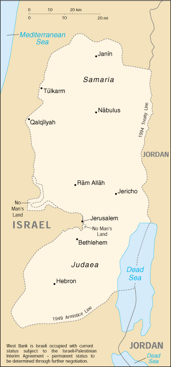

| West Bank |
|
|  | |
| Introduction |
Background: The Israel-PLO Declaration of Principles on Interim Self-Government Arrangements (the DOP), signed in Washington on 13 September 1993, provides for a transitional period not exceeding five years of Palestinian interim self-government in the Gaza Strip and the West Bank. Under the DOP, Israel agreed to transfer certain powers and responsibilities to the Palestinian Authority, which includes a Palestinian Legislative Council elected in January 1996, as part of interim self-governing arrangements in the West Bank and Gaza Strip. A transfer of powers and responsibilities for the Gaza Strip and Jericho took place pursuant to the Israel-PLO 4 May 1994 Cairo Agreement on the Gaza Strip and the Jericho Area and in additional areas of the West Bank pursuant to the Israel-PLO 28 September 1995 Interim Agreement, the Israel-PLO 15 January 1997 Protocol Concerning Redeployment in Hebron, the Israel-PLO 23 October 1998 Wye River Memorandum, and the 4 September 1999 Sharm el-Sheikh Agreement. The DOP provides that Israel will retain responsibility during the transitional period for external security and for internal security and public order of settlements and Israeli citizens. Permanent status is to be determined through direct negotiations, which resumed in September 1999 after a three-year hiatus.
| Geography |
Location: Middle East, west of Jordan
Geographic coordinates: 32 00 N, 35 15 E
Map references: Middle East
Area:
total:
5,860 sq km
land:
5,640 sq km
water:
220 sq km
note:
includes West Bank, Latrun Salient, and the northwest quarter of the Dead Sea, but excludes Mt. Scopus; East Jerusalem and Jerusalem No Man's Land are also included only as a means of depicting the entire area occupied by Israel in 1967
Area - comparative: slightly smaller than Delaware
Land boundaries:
total:
404 km
border countries:
Israel 307 km, Jordan 97 km
Coastline: 0 km (landlocked)
Maritime claims: none (landlocked)
Climate: temperate, temperature and precipitation vary with altitude, warm to hot summers, cool to mild winters
Terrain: mostly rugged dissected upland, some vegetation in west, but barren in east
Elevation extremes:
lowest point:
Dead Sea -408 m
highest point:
Tall Asur 1,022 m
Natural resources: arable land
Land use:
arable land:
27%
permanent crops:
0%
permanent pastures:
32%
forests and woodland:
1%
other:
40%
Irrigated land: NA sq km
Natural hazards: NA
Environment - current issues: adequacy of fresh water supply; sewage treatment
Geography - note: landlocked; highlands are main recharge area for Israel's coastal aquifers; there are 231 Israeli settlements and civilian land use sites in the West Bank and 29 in East Jerusalem (August 1999 est.)
| People |
Population:
2,020,298
note:
in addition, there are some 171,000 Israeli settlers in the West Bank and about 172,000 in East Jerusalem (July 2000 est.)
Age structure:
0-14 years:
45% (male 463,644; female 440,211)
15-64 years:
52% (male 531,711; female 511,256)
65 years and over:
3% (male 32,107; female 41,369) (2000 est.)
Population growth rate: 3.38% (2000 est.)
Birth rate: 36.73 births/1,000 population (2000 est.)
Death rate: 4.49 deaths/1,000 population (2000 est.)
Net migration rate: 1.51 migrant(s)/1,000 population (2000 est.)
Sex ratio:
at birth:
1.05 male(s)/female
under 15 years:
1.05 male(s)/female
15-64 years:
1.04 male(s)/female
65 years and over:
0.78 male(s)/female
total population:
1.03 male(s)/female (2000 est.)
Infant mortality rate: 22.33 deaths/1,000 live births (2000 est.)
Life expectancy at birth:
total population:
72.08 years
male:
70.39 years
female:
73.86 years (2000 est.)
Total fertility rate: 5.02 children born/woman (2000 est.)
Nationality:
noun:
NA
adjective:
NA
Ethnic groups: Palestinian Arab and other 83%, Jewish 17%
Religions: Muslim 75% (predominantly Sunni), Jewish 17%, Christian and other 8%
Languages: Arabic, Hebrew (spoken by Israeli settlers and many Palestinians), English (widely understood)
Literacy:
definition:
NA
total population:
NA%
male:
NA%
female:
NA%
| Government |
Country name:
conventional long form:
none
conventional short form:
West Bank
Data code: WE
| Economy |
Economy - overview: Economic conditions in the West Bank - where economic activity is governed by the Paris Economic Protocol of April 1994 between Israel and the Palestinian Authority - have deteriorated since the early 1990s. Real per capita GDP for the West Bank and Gaza Strip (WBGS) declined 36.1% between 1992 and 1996 owing to the combined effect of falling aggregate incomes and robust population growth. The downturn in economic activity was largely the result of Israeli closure policies - the imposition of generalized border closures in response to security incidents in Israel - which disrupted previously established labor and commodity market relationships between Israel and the WBGS. The most serious negative social effect of this downturn has been the emergence of chronic unemployment; average unemployment rates in the WBGS during the 1980s were generally under 5%; by the mid-1990s this level had risen to over 20%. Since 1997 Israel's use of comprehensive closures has decreased and, in 1998, Israel implemented new policies to reduce the impact of closures and other security procedures on the movement of Palestinian goods and labor. In October 1999, Israel permitted the opening of a safe passage between the West Bank and the Gaza Strip in accordance with the 1995 Interim Agreement. These changes in the conduct of economic activity have fueled a moderate economic recovery in 1998-99.
GDP: purchasing power parity - $3.3 billion (1999 est.)
GDP - real growth rate: 4.6% (1999 est.)
GDP - per capita: purchasing power parity - $2,050 (1999 est.)
GDP - composition by sector:
agriculture:
33%
industry:
25%
services:
42% (includes Gaza Strip) (1995 est.)
Population below poverty line: NA%
Household income or consumption by percentage share:
lowest 10%:
NA%
highest 10%:
NA%
Inflation rate (consumer prices): 5% (includes Gaza Strip) (1999 est.)
Labor force: NA
Labor force - by occupation: agriculture 13%, industry 13%, commerce, restaurants, and hotels 12%, construction 8%, other services 54% (1996)
Unemployment rate: 14.5% (includes Gaza Strip) (1998 est.)
Budget:
revenues:
$1.6 billion
expenditures:
$1.73 billion, including capital expenditures of $NA (includes Gaza Strip) (1999 est.)
Industries: generally small family businesses that produce cement, textiles, soap, olive-wood carvings, and mother-of-pearl souvenirs; the Israelis have established some small-scale, modern industries in the settlements and industrial centers
Industrial production growth rate: NA%
Electricity - production: NA kWh; note - most electricity imported from Israel; East Jerusalem Electric Company buys and distributes electricity to Palestinians in East Jerusalem and its concession in the West Bank; the Israel Electric Company directly supplies electricity to most Jewish residents and military facilities; at the same time, some Palestinian municipalities, such as Nabulus and Janin, generate their own electricity from small power plants
Electricity - production by source:
fossil fuel:
NA%
hydro:
NA%
nuclear:
NA%
other:
NA%
Electricity - consumption: NA kWh
Electricity - exports: NA kWh
Electricity - imports: NA kWh
Agriculture - products: olives, citrus, vegetables; beef, dairy products
Exports: $682 million (includes Gaza Strip) (f.o.b., 1998 est.)
Exports - commodities: olives, fruit, vegetables, limestone
Exports - partners: Israel, Jordan, Gaza Strip
Imports: $2.5 billion (includes Gaza Strip) (c.i.f., 1998 est.)
Imports - commodities: food, consumer goods, construction materials
Imports - partners: Israel, Jordan, Gaza Strip
Debt - external: $108 million (includes Gaza Strip) (1997 est.)
Economic aid - recipient: $800 million pledged (includes Gaza Strip) (1999)
Currency: 1 new Israeli shekel (NIS) = 100 new agorot; 1 Jordanian dinar (JD) = 1,000 fils
Exchange rates: new Israeli shekels (NIS) per US$1 - 4.2260 (November 1999), 3.8001 (1998), 3.4494 (1997), 3.1917 (1996), 3.0113 (1995); Jordanian dinars (JD) per US$1 - fixed rate of 0.7090 (from 1996), 0.7005 (1995)
Fiscal year: calendar year (since 1 January 1992)
| Communications |
Telephones - main lines in use: 95,729 (total for West Bank and Gaza Strip) (1997)
Telephones - mobile cellular: NA
Telephone system:
domestic:
NA
international:
NA
note:
Israeli company BEZEK and the Palestinian company PALTEL are responsible for communication services in the West Bank
Radio broadcast stations: AM 1, FM 0, shortwave 0 (1998)
Radios: NA; note - most Palestinian households have radios (1999)
Television broadcast stations: NA
Televisions: NA; note - many Palestinian households have televisions (1999)
Internet Service Providers (ISPs): 8 (1999)
| Transportation |
Railways: 0 km
Highways:
total:
4,500 km
paved:
2,700 km
unpaved:
1,800 km (1997 est.)
note:
Israelis have developed many highways to service Jewish settlements
Ports and harbors: none
Airports: 2 (1999 est.)
Airports - with paved runways:
total:
2
1,524 to 2,437 m:
1
under 914 m:
1 (1999 est.)
| Military |
Military branches: NA
Military expenditures - dollar figure: $NA
Military expenditures - percent of GDP: NA%
| Transnational Issues |
Disputes - international: West Bank and Gaza Strip are Israeli-occupied with current status subject to the Israeli-Palestinian Interim Agreement - permanent status to be determined through further negotiation